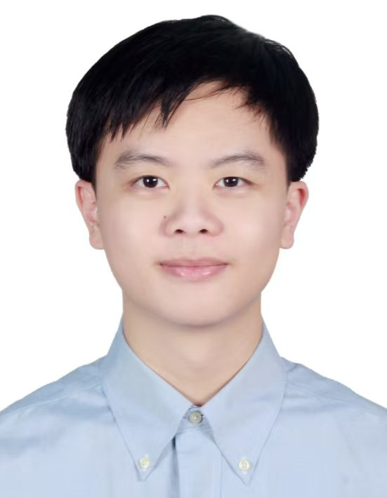
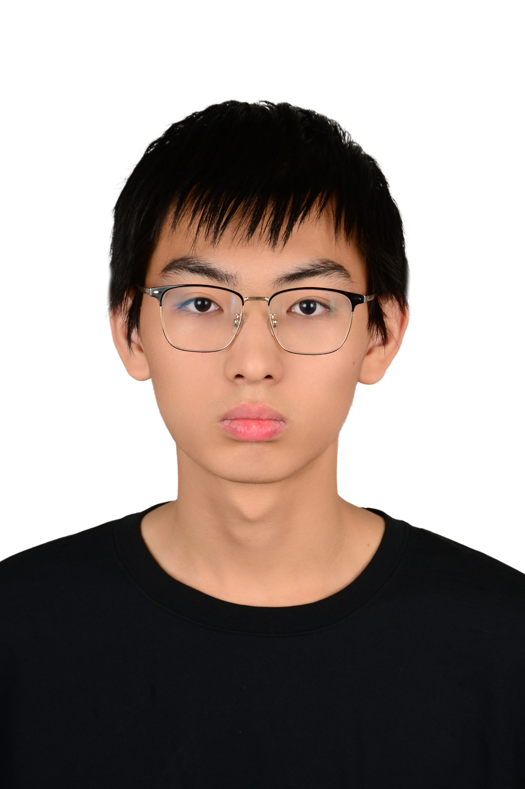
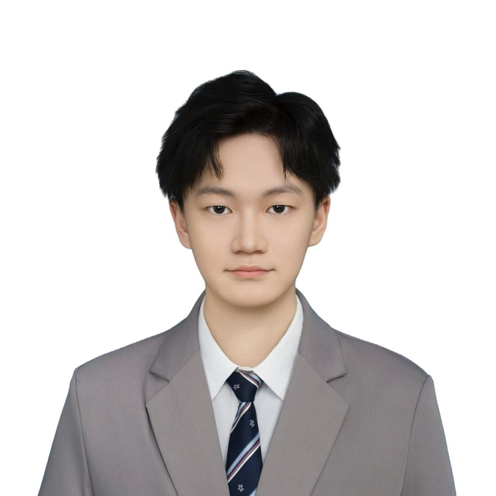
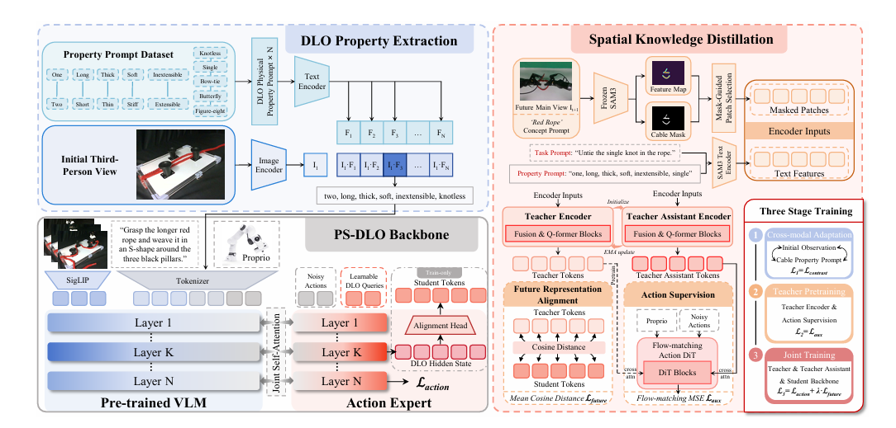
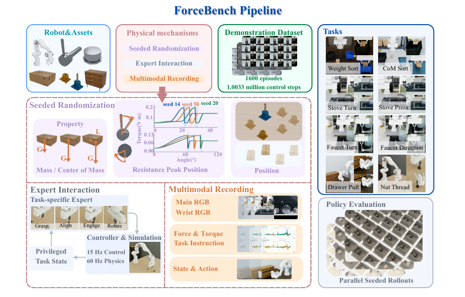
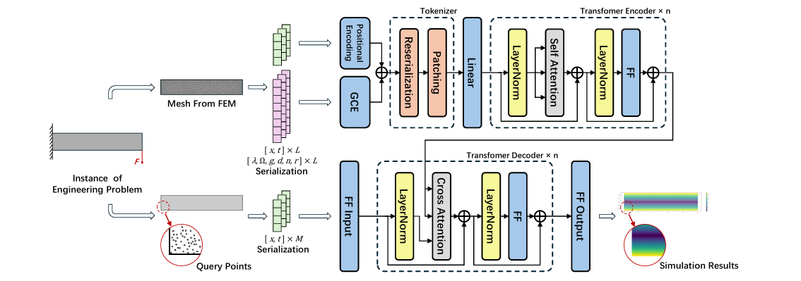

🚀 Opportunities招聘
His current research interests include multimodal physical intelligence models (RSI/VLM/VLA/WAM, etc.), efficient physical AI, safe physical AI, robotic systems, dexterous hands, AI for PDEs, physics-informed neural networks (PINNs), high-computing-power controllers, and integrated cloud-computing and control, among others.他目前的研究兴趣包括，多模态物理智能模型（RSI/VLM/VLA/WAM等）、高效物理AI、安全物理AI、机器人系统、灵巧手、AI4PDE、物理信息神经网路（PINNs）、高算力控制器、网算控一体化等。
The laboratory has long-term recruitment for postdoctoral researchers, engineers, master's and doctoral interns, and undergraduate interns. At the same time, according to Peking University's enrollment plan, there are several enrollment slots for master's and doctoral students. In addition, the laboratory also collaborates with many domestic and international universities, providing several opportunities for jointly trained master's and doctoral students.实验室长期招收博士后、工程师、硕博实习生和本科实习生。 同时根据北京大学招生计划，有若干硕士生和博士生招生指标。 除此之外，实验室还与多所国内外高校合作，有若干联合培养硕士生和博士生机会。
The laboratory has numerous real projects focused on scenarios such as AI infrastructure, industrial robotics, autonomous laboratories, advanced manufacturing, healthcare, urban management, and energy and power. It is well-equipped, has a harmonious team atmosphere, and provides good training conditions for beginners. PhD, master's, and undergraduate students are welcome to join, to explore and grow together.实验室有较多面向AI基建、工业机器人、自主实验室、高端制造、医疗康养、城市管理和能源电力等场景的真实项目，设备资源充足，团队氛围融洽，新手培养条件较好，欢迎博士生、硕士生、本科生加入，共同探索，共同成长。
Please send your CV, transcripts, and a short description of your research interests to gpkupilab@pku.edu.cn请将个人简历、成绩单与简短的研究兴趣说明发送至 gpkupilab@pku.edu.cn。
📰 News新闻动态
- Oct 2026 New Opportunity for Peking University Graduation Projects｜Enter the field of humanoid robots and delve into cutting-edge embodied intelligence models. Read more →北大毕设新机会｜入局人形机器人，深耕具身智能前沿模型。 查看详情 →
- Oct 2026 Peking University professor Pang Zhibo appeared in an interview on CGTN. Read more →北大教授庞智博登上 CGTN 专访。 查看详情 →
- Sept 2026 Peking University 2027 MEM Online Admissions Briefing Opens. Read more →北大 2027MEM 线上招生说明会开启。 查看详情 →
- Aug 2026 We are hiring senior algorithm interns in embodied world models and physical intelligence. Read more →招聘高级算法实习生（具身智能世界模型与物理智能方向）。 查看详情 →
- Jun 2026 The PKU Physical Intelligence Lab summer internship program is now open. Read more →北京大学物理智能实验室暑期实习招聘启动。 查看详情 →
- Oct 2025 Prof. Zhibo Pang joins Peking University as a Tenured Professor and founds the PKU Physical Intelligence Lab.Learn more... Read more →庞智博教授加入北京大学任长聘教授，创立北京大学工业物理智能实验室。 查看详情 →


👥 People团队
\\
Academic Leader学术带头人

Visiting Scholar访问学者

Project Management项目管理

Postdoctoral researcher博士后
Ph.D. Students博士生


Master Students硕士生





Undergraduate student本科生



Project Intern项目实习生

Alumni校友

📚 Some papers部分论文
* Corresponding author. Full and up-to-date list available upon request.* 通讯作者。完整最新列表可来函索取。
Y. Lou et al., "DynamicWAM: Dual-Path Motion Conditioning for World–Action Models in Dynamic Manipulation," Forty-First AAAI Conference on Artificial Intelligence (AAAI), 2027, under review.
Dual-path motion conditioning lifts the DOMINO benchmark success rate from 29.3% (previous SOTA) to 38.2%.双路径运动条件将 DOMINO 基准成功率从此前 SOTA 的 29.3% 提升至 38.2%。

M. Li et al., "PS-DLO: Property- and Spatially Aware Deformable Linear Object Manipulation Policy" in IEEE International Conference on Robotics and Automation (ICRA) 2027 under review
Improves precision from ±1.2 to ±0.15 via encoder debiasing and visual–trajectory cross-attention.通过编码器去偏与视觉–轨迹交叉注意力，将精度从 ±1.2 提升至 ±0.15。

X. Han et al. "ForceBench: Benchmarking Force Integration for Robotic Manipulation." in IEEE International Conference on Robotics and Automation (ICRA) 2027 under review

Y. Fu et al., "CableSort: Force-Guided Dual-Arm Sorting of Stacked Cables," RSS 2026 DAROMA Workshop, 2026.
Instance-mask IoU improved from 0.36 to 0.93 over the strongest segmentation baseline, with 48% end-to-end sorting success.相较最强分割基线，实例掩码 IoU 由 0.36 提升至 0.93，端到端分拣成功率达 48%。

D. Hu et al., "Spectral-Temporal Conditioning: A Frequency-Domain Framework for Robust Robotic Imitation Learning" in IEEE Transactions on Consumer Electronics, 2026.
Frequency-domain policy learning lifts long-horizon success rate from 3% to 36%.频域策略学习将长程任务成功率从 3% 提升至 36%。

F. Ma et al., "Embodied Artificial Intelligence-Driven Integrated Development Environment for Industrial Automation Systems: Requirements and Framework," in IEEE Industrial Electronics Magazine, 2026.

Y. Luo, J. Wang, et al., "MMET: A Multi-Input and Multi-Scale Transformer for Efficient PDEs Solving," in International Joint Conference on Artificial Intelligence (IJCAI), 2025.


🎓 Teaching教学
-
Fundamentals of Robotics Embodied Intelligence System Development Practice机器人具身智能系统开发实践基础 (Class in session)（开课中）
A practice-oriented course covering the complete process of robot embodied intelligence development, divided into four units: task simulation, data collection, model training, and inference deployment.Learn more...一门面向实践的课程，覆盖机器人具身智能开发的完整流程，分为四个单元：任务仿真、数据采集、模型训练与推理部署。查看详情...... -
Physical Intelligence Development Training Camp物理智能开发训练营 (Student Engineering & Science Innovation Association)（学生工程与科创协会）
A hands-on training camp that connects classroom learning with industry deployment, strengthening students' practical abilities in physical intelligent engineering.一门连接课堂学习与产业部署的动手训练营，强化学生的物理智能工程实践能力。